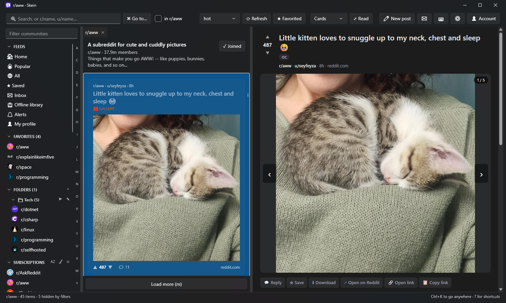
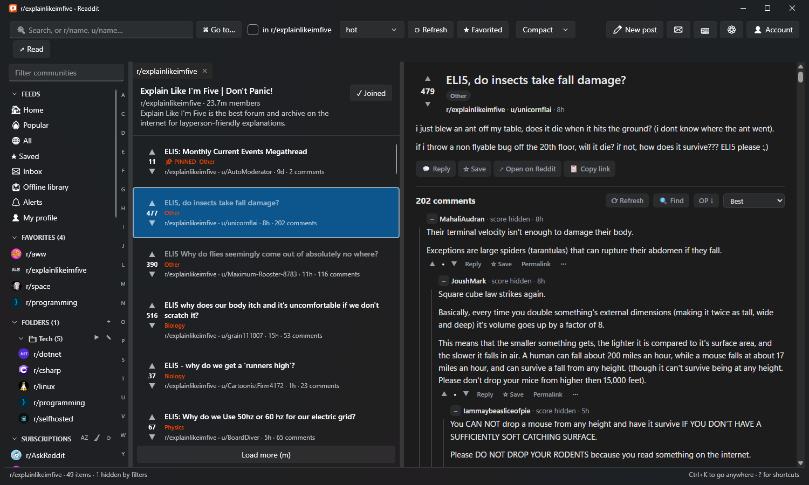
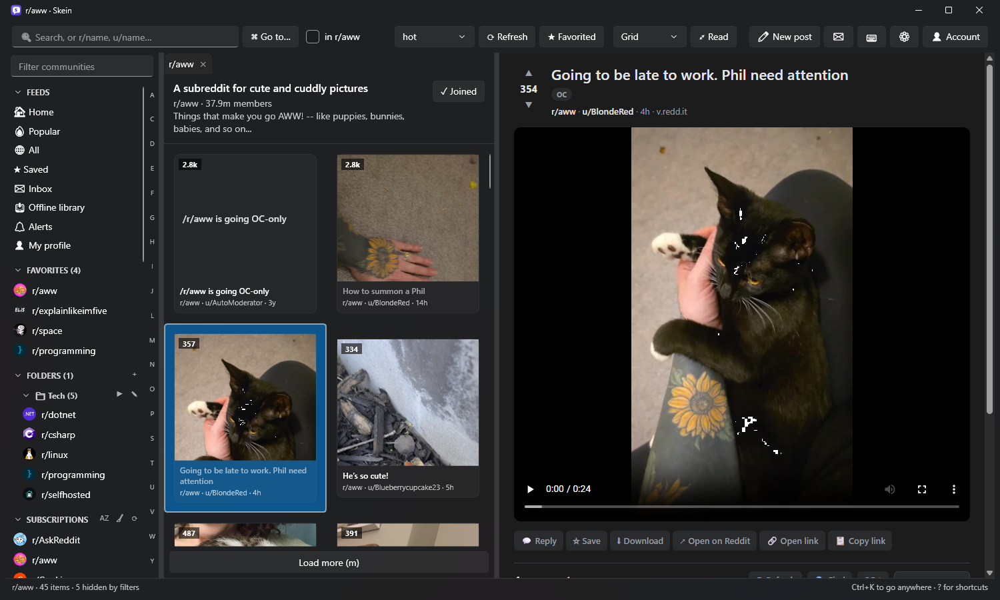
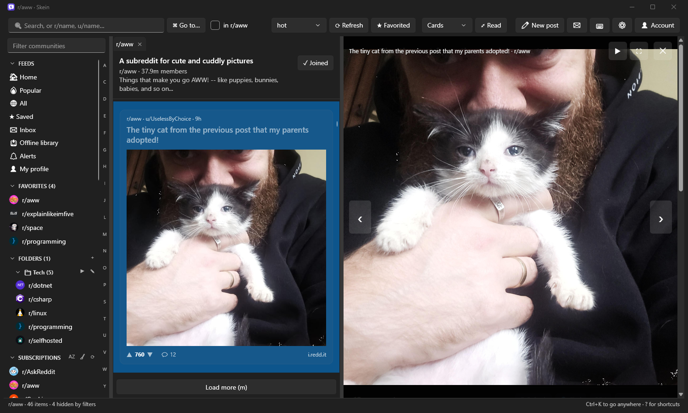
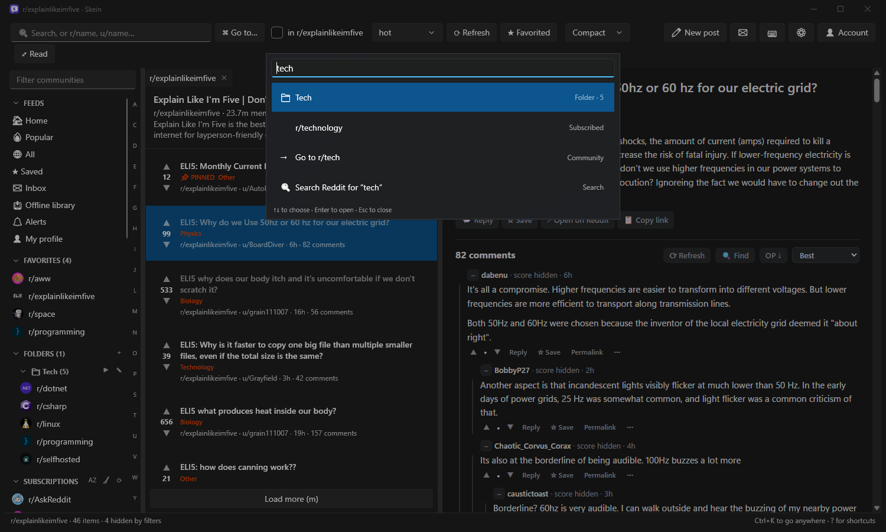

Skein is a fast, keyboard-friendly Reddit client for Windows. Tabs, a proper picture viewer, an offline library, alerts and reminders, and real moderation tools. Free, with its source on GitHub.
Windows 10 and 11 · free · updates itself

Skein reads Reddit through your own signed-in session, so there's nothing to set up: sign in once and go.
Open communities, searches and profiles in tabs. Group communities into folders and read a folder as one feed.
j/k to move, a/z to vote, Ctrl+K to jump anywhere. Every action has a shortcut.
Galleries, Reddit video with sound, a viewer that steps from post to post, a slideshow, and picture in picture.
New-since-last-visit highlights, live threads, find in thread, jump to the original poster, and a ✨ summary on demand.
Markdown or rich text with a toolbar, spell check, saved replies, drafts that never get lost, and posts scheduled for later.
Keyword alerts, watched threads, followed people, and “remind me later”, all as Windows notifications you can reply from.
Saved posts are kept with their comments and media. Search them, tag them and export them.
Mod queues, removal reasons, modmail, user history at a glance, bans and every mod action, without leaving the post.
Compact, card and grid layouts, mini mode, side-by-side posts, and a layout that uses ultra-wide monitors well.
Sync folders, alerts, notes and more between PCs through OneDrive, and back everything up to one file.
Read posts and comments in other languages, when you turn translation on.
No account with us, no tracking. Your password only ever goes to Reddit, and the source code is on GitHub for anyone to read.




Skein-win-Setup.exe installs Skein for you (no admin needed), adds it to Start and keeps it up to date.
Skein-Portable.exe is a single file you can run from anywhere, including a USB stick.
Skein needs Microsoft Edge WebView2, which Windows 10 and 11 already include. Release notes are on the releases page.